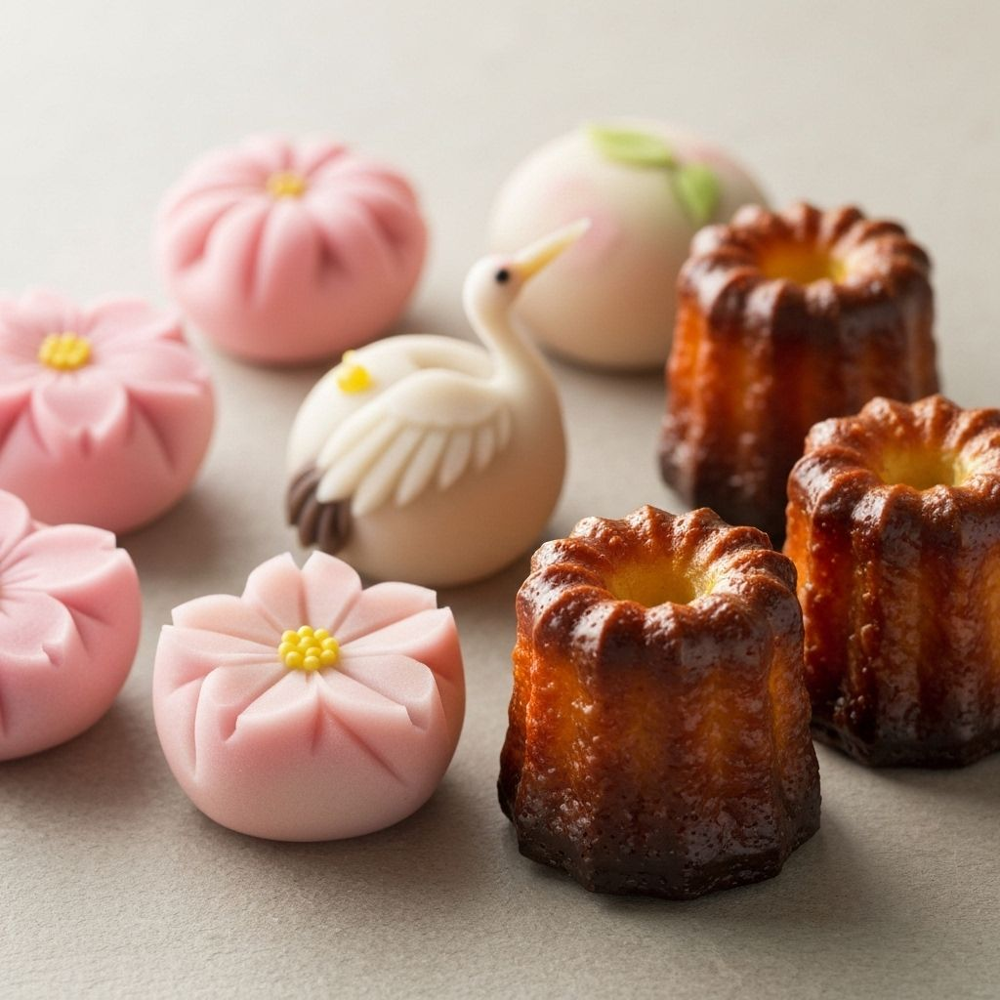
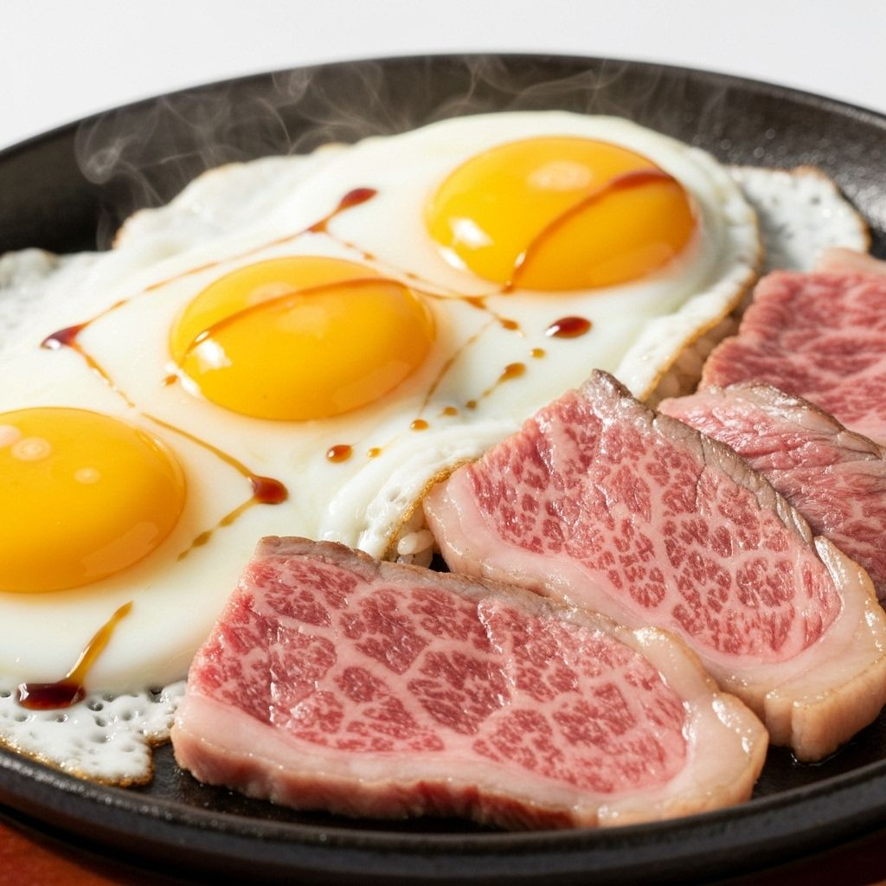

02私たちのこだわり

和菓子・洋菓子
伝統的な和菓子と、職人が一つ一つ丁寧に焼き上げるカヌレ。北海道産の厳選された素材を使用し、昔ながらの製法で作られています。

肉・卵
信頼できる生産者から直送される新鮮な和牛と平飼い卵。動物福祉に配慮した環境で育てられた、安心・安全な食材をお届けします。

野菜
自然栽培で育てられた季節の野菜。農薬や化学肥料を使わず、土本来の力を活かした栽培方法で、栄養価の高い野菜をお届けします。